Time Series Forecasting: Predicting US Retail Sales
Project Overview
Retail sales are one of the most widely watched indicators of economic activity. When consumers spend more money, businesses expand, inventories increase, and economic growth tends to accelerate. When spending slows, it can signal broader economic weakness.
This project was completed in collaboration with my good friend Ankit Das. Together, we analyzed more than thirty years of monthly U.S. retail sales data and developed forecasting models to predict future sales activity. Rather than focusing solely on prediction accuracy, we explored the underlying structure of the data, identifying long-term growth trends, recurring seasonal patterns, and unexpected events that influenced consumer spending over time.
Using historical retail sales data from the Federal Reserve Economic Data (FRED) database, we applied several time series forecasting techniques including Seasonal Naive Forecasting, Exponential Smoothing (ETS), ARIMA, and Neural Network models. We evaluated each model to determine how effectively it captured the behavior of the underlying data and how accurately it could forecast future retail sales.
The project ultimately demonstrated that while retail sales exhibit strong long-term growth and recurring seasonal behavior, advanced forecasting models such as ARIMA and ETS are significantly better at capturing those patterns than simple benchmark approaches. The analysis also highlights how major economic disruptions, such as the COVID-19 pandemic, can introduce unusual volatility that challenges even sophisticated forecasting techniques.
Data & Approach
We used monthly U.S. retail sales data from the Federal Reserve Economic Data (FRED) database, covering the period from January 1992 through March 2023. Our objective was to identify underlying patterns in consumer spending and evaluate multiple forecasting approaches for predicting future retail sales activity.
We began with exploratory time series techniques to investigate trend, seasonality, and structural changes within the data. Because the series exhibited a strong upward trend, we applied first-order differencing to create a more stationary series suitable for forecasting. We then examined seasonality using seasonal plots and subseries visualizations, while using ACF and PACF diagnostics to analyze temporal relationships and support model selection.
Finally, we developed and compared several forecasting models, including Seasonal Naive, Exponential Smoothing (ETS), ARIMA, and Neural Network (NNAR) approaches. We evaluated model performance using residual diagnostics and forecast accuracy metrics.
| Category | Details |
|---|---|
| Dataset | U.S. Monthly Retail Sales |
| Data Source | Federal Reserve Economic Data (FRED) |
| Time Period | January 1992 – March 2023 |
| Tools Used | R, forecast, fpp3, ggplot2, tseries |
| Data Transformation | First-Order Differencing |
| Exploratory Techniques | Time Plots, Seasonal Plots, Subseries Analysis |
| Diagnostic Tools | ACF, PACF, Residual Analysis |
| Forecasting Models | Seasonal Naive, ETS, ARIMA, Neural Network (NNAR) |
| Evaluation Metrics | Residual Standard Deviation & Diagnostic Testing |
Understanding the Time Series
Before building any forecasting model, we first needed to understand the behavior of the retail sales series itself. Time series forecasting involves more than simply fitting a model to historical values. It requires identifying whether the data has a trend, whether patterns repeat over time, and whether the series needs to be transformed before modeling.
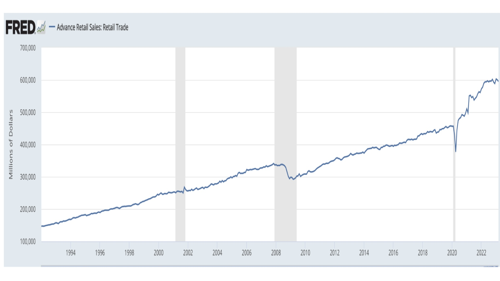
The original time plot shows a clear long-term upward trend in U.S. retail sales from 1992 through 2023. Sales rose steadily for most of the period, with noticeable disruptions around the 2008 financial crisis and the COVID-19 pandemic. This confirmed that the raw series was not stationary, meaning its average level changed over time.
Because many forecasting models work better when the data is more stable, we applied first-order differencing. Instead of modeling total sales directly, differencing measures the month-to-month change in sales. This helped remove the long-term upward trend and shifted the focus toward short-term movement in consumer spending.
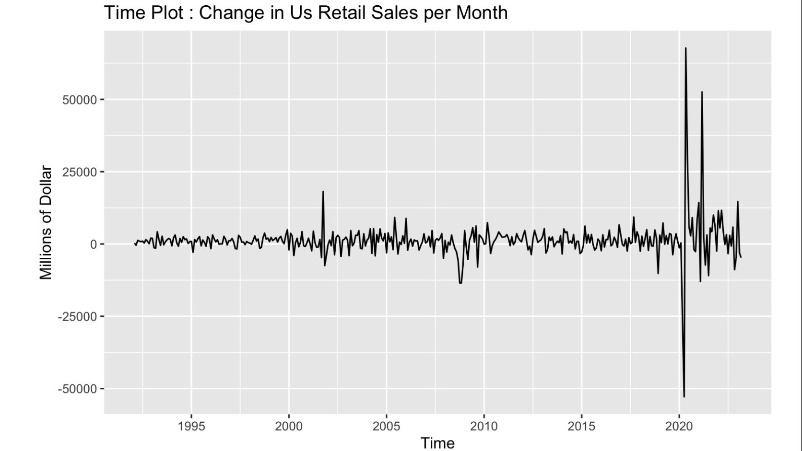
After differencing, the series is much more centered around zero, which makes it more suitable for forecasting. The graph above shows the monthly change in retail sales, which makes unusual periods easier to see, especially the sharp drop and rebound during 2020. This is important because large shocks can influence model performance and residual behavior.
Next, we investigated seasonality. A seasonal plot compares the same months across different years, making it easier to see whether certain months consistently behave differently.
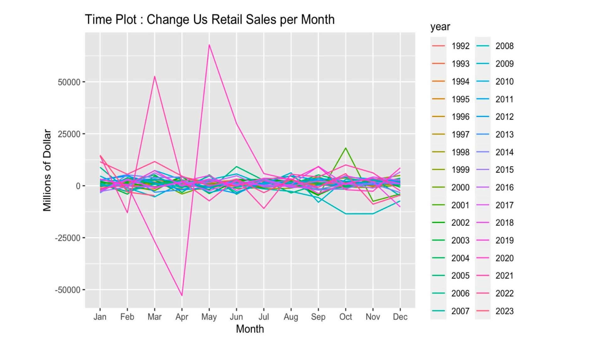
It is difficult to identify clear seasonal patterns from this plot due to the level of noise in the data. However, looking closely, there appear to be negative sloping lines at the beginning of the plot from January to February, and positive sloping lines at the end of the plot from November to December. This suggests that retail sales may grow in the November to December period and decline in the January to February period, which aligns with holiday shopping behavior. Most notable, however, are the pronounced pink spikes in February, March, April, May, and July. The pink lines represent the 2019 and 2020 seasons, and the unusual spikes can be attributed to fluctuations during the COVID-19 pandemic.
To confirm whether this pattern was consistent, we also used a subseries plot. This view groups the data by month and shows how each month behaves across the full time period.
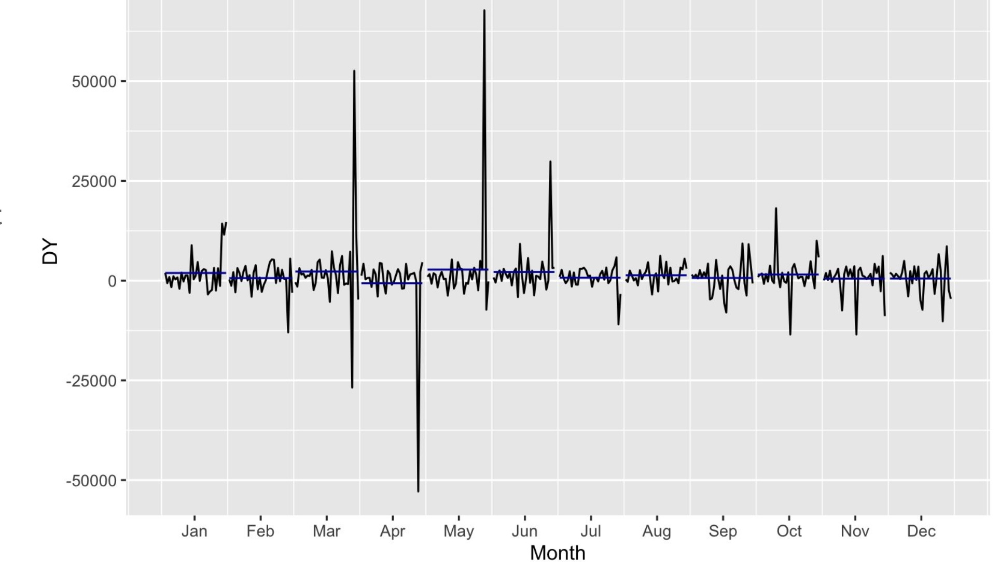
The blue horizontal lines show the mean change in retail sales for that specific month over the 31-year period. It is worth highlighting that the averages for some of the months may be skewed due to economic fluctuations that occurred during this time period, such as the 2008 recession and the COVID-19 pandemic. At a glance, the subseries plot suggests that seasonality is present, but it is not overwhelmingly strong.
Finally, we reviewed the ACF and PACF plots. These diagnostics show whether current sales changes are related to previous months.
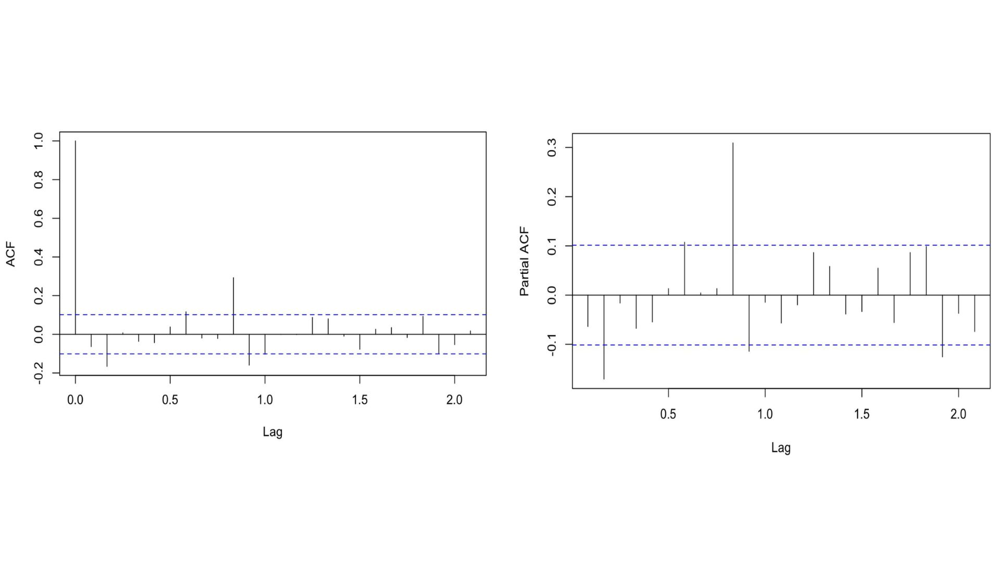
The ACF shows how strongly the differenced retail sales series is correlated with its past values. The blue horizontal lines represent the approximate 95% confidence bounds. Vertical lines that stay inside those bounds are not considered statistically significant, while lines that extend beyond them suggest meaningful autocorrelation at that lag.
In this ACF plot, most values fall within the blue lines, indicating that first-order differencing successfully removed much of the trend and made the series more stationary. A few spikes extend beyond the confidence bounds, including both positive and negative autocorrelations. The most notable feature is a large positive spike around a lag of 0.8, suggesting that some structure remains in the data even after differencing. For our project, the ACF helps identify whether moving average (MA) terms may be appropriate when selecting an ARIMA model.
The PACF shows the direct relationship between the series and its past values after controlling for the effects of intermediate lags. Like the ACF, the blue lines represent the approximate 95% confidence bounds, and vertical lines outside those bounds indicate statistically meaningful partial autocorrelation.
In this PACF plot, most values are again close to zero, suggesting that differencing removed much of the original dependence in the series. However, several spikes extend beyond the confidence bounds, including a particularly large positive spike around a lag of 0.8. This indicates that certain lagged values may still have a direct influence on current retail sales. For our project, the PACF is useful because it helps identify potential autoregressive (AR) terms when determining the most appropriate ARIMA specification.
Comparing Forecasting Models
With a better understanding of the series and its underlying characteristics, we then developed forecasting models and compared their performance.
We began with a simple benchmark forecast before progressing to more advanced statistical and machine learning approaches. We evaluated four models: Seasonal Naive, Exponential Smoothing (ETS), ARIMA, and Neural Networks (NNAR).
For each model, we used residual diagnostics and forecast error metrics to assess how effectively it captures the patterns present in the retail sales series and whether meaningful information remains unexplained.
Benchmark: Seasonal Naive Forecast
The Seasonal Naive method serves as a benchmark against which more sophisticated forecasting models can be compared.
This approach assumes that future observations will behave similarly to the same period in the previous seasonal cycle. For monthly retail sales data, this means forecasts are generated using information from the corresponding month in the prior year.
A benchmark model is not expected to produce the most accurate forecasts. Instead, it provides a baseline that helps determine whether more advanced methods are adding meaningful predictive value.
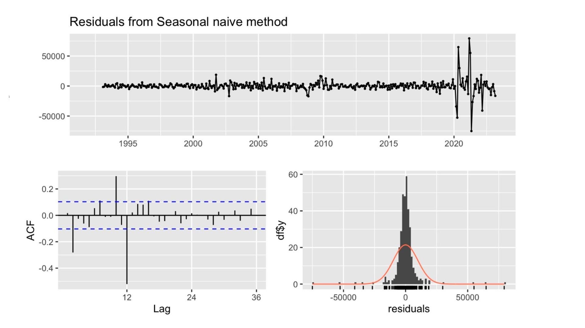
The residual diagnostics indicate that the Seasonal Naive model leaves a substantial amount of structure unexplained. Several spikes remain outside the confidence intervals in the residual ACF plot, suggesting that meaningful autocorrelation is still present.
The model produces a residual standard deviation of 9,855.1404, the highest among the models evaluated. This suggests that retail sales behavior is more complex than simple seasonal repetition and that additional information remains available for more advanced forecasting methods to capture.
Exponential Smoothing (ETS)
Next, we considered Exponential Smoothing, commonly referred to as ETS.
Unlike the Seasonal Naive approach, ETS assigns greater weight to more recent observations while still incorporating information from the historical series. This allows the model to adapt more effectively when recent behavior is more representative of future outcomes.
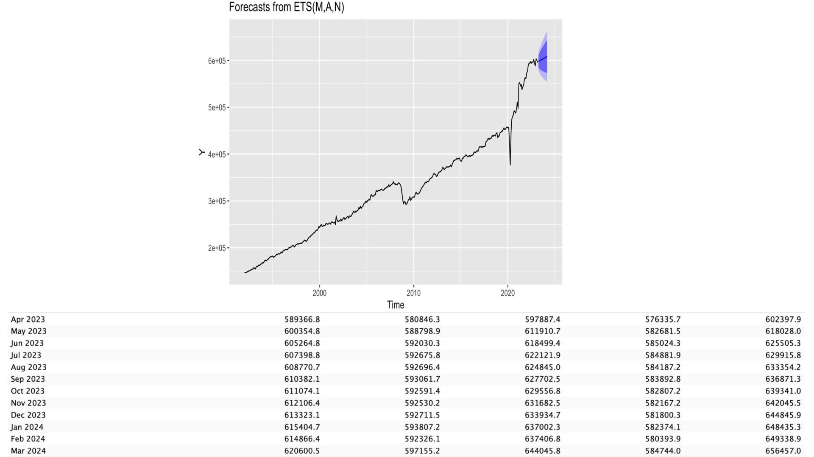
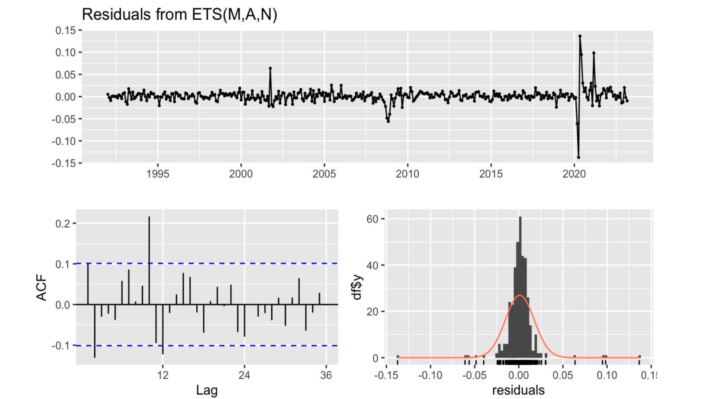
The residual diagnostics show an improvement over the benchmark model. While some autocorrelation remains, the residuals exhibit less structure overall, indicating that the model captures a larger portion of the information contained within the retail sales series.
The residual standard deviation falls to 6,722.83, representing a substantial improvement over the Seasonal Naive forecast. This suggests that accounting for the changing behavior of the series provides a more accurate representation of retail sales activity.
Although ETS performs considerably better than the benchmark approach, the residual diagnostics indicate that some predictable patterns remain unexplained. This suggests that a model capable of explicitly accounting for lagged relationships may provide additional improvements.
AutoRegressive Integrated Moving Average - ARIMA
ARIMA is one of the most widely used forecasting techniques in time series analysis. Unlike ETS, which focuses on smoothing historical observations and extrapolating underlying trend and seasonal patterns, ARIMA explicitly models the relationships between current observations, past values, and previous forecast errors. This allows the model to capture more complex temporal dependencies within the data. Because retail sales often exhibit both short-term fluctuations and recurring seasonal behavior, ARIMA provides a flexible framework for modeling these patterns and generating forecasts based on the underlying structure of the time series.
To identify the most appropriate model specification, we used an automated model selection procedure that evaluates multiple ARIMA configurations and selects the model that best fits the data. The selected model is: ARIMA(0,1,2)(2,1,1)[12]
The selected model captures both short-term fluctuations and recurring yearly patterns. The first set of parameters, (0,1,2), describes the non-seasonal component of the model. The 0 indicates that no previous sales values are used directly in forecasting, the 1 indicates that the data is differenced once to remove long-term trends and achieve stationarity, and the 2 indicates that the model incorporates information from the errors of the previous two forecasts. The second set of parameters, (2,1,1)[12], describes the seasonal component. The 2 indicates that the model learns from sales behavior in the same period during the previous two years, the 1 applies seasonal differencing to remove recurring annual patterns, and the second 1 incorporates information from forecast errors in the previous seasonal cycle. Finally, the 12 indicates that the seasonal pattern repeats every 12 months. Together, these components enable the model to account for both short-term dynamics and long-term seasonal behavior, making it well suited for forecasting retail sales.
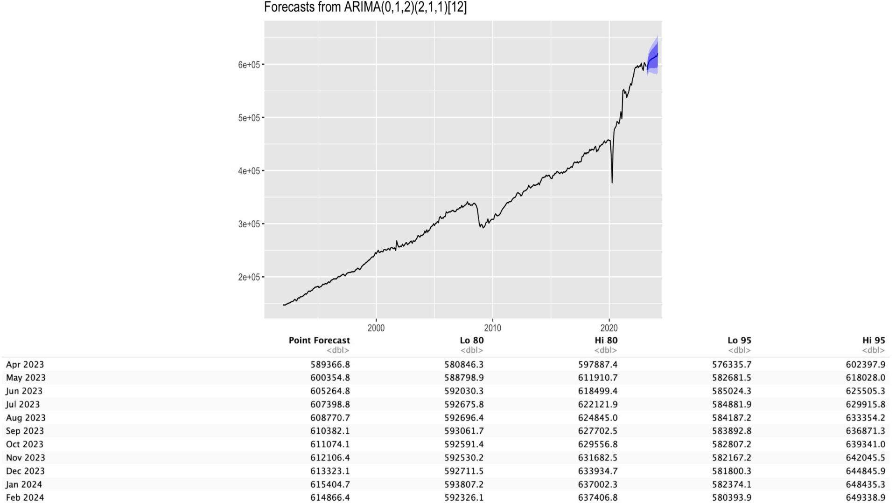
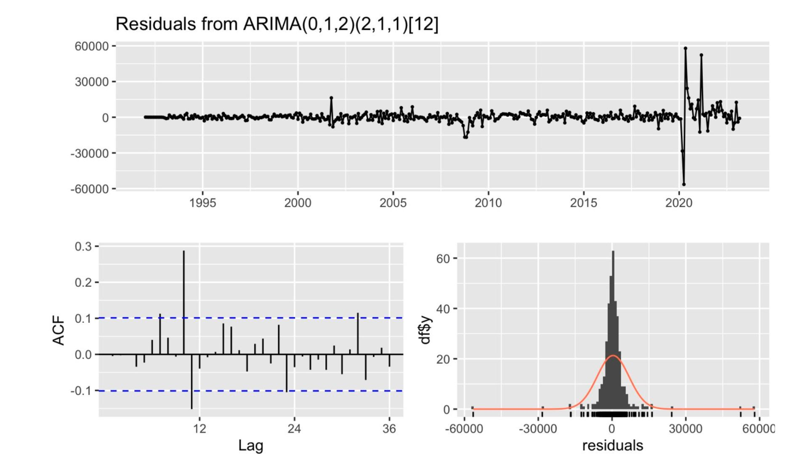
Among the forecasting approaches we evaluated, ARIMA produces the strongest overall performance.
The residual diagnostics indicate that some autocorrelation remains after fitting the model, as several spikes still extend beyond the confidence intervals in the residual ACF plot. This suggests that the model does not fully explain all of the structure present within the series.
However, compared to the previous forecasting approaches, ARIMA captures a larger portion of the underlying behavior of the data and produces the lowest forecast error. The model produced a residual standard deviation of 6,648.538, narrowly outperforming the ETS model and substantially improving upon the Seasonal Naive benchmark.
While the residual diagnostics suggest there is still room for improvement, the combination of lower forecast error and reduced unexplained structure makes ARIMA the strongest-performing model in this analysis. The results demonstrate that explicitly modeling both seasonal patterns and temporal relationships provides a more effective representation of retail sales behavior than the alternative approaches considered.
Neural Network AutoRegression
The final approach explores a Neural Network Autoregressive model, often referred to as NNAR. Unlike ETS and ARIMA, which rely on more traditional statistical relationships and time series structures, a neural network attempts to learn patterns directly from the historical data.
For this model, we split the data into a training period ending in December 2018 and a testing period beginning in January 2019. We then trained the model on the earlier retail sales data and used it to generate a 12-month forecast.
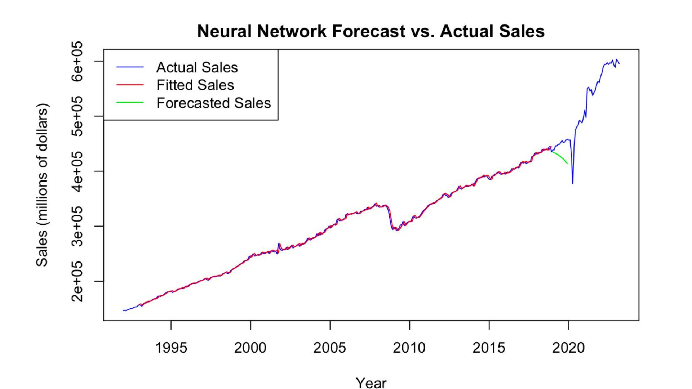
The fitted values track the historical data closely during the training period, which suggests that the model is able to learn the broad upward movement of retail sales over time. However, the actual forecast does not perform well. The green forecast line begins to decline almost immediately, while actual retail sales continue rising before experiencing the sharp disruption and rebound around 2020.
This divergence suggests that the neural network is not generalizing well beyond the training data. One likely reason is that the model relies solely on historical retail sales and does not incorporate external economic factors such as inflation, unemployment, interest rates, or consumer confidence. In addition, the model uses a relatively simple NNAR implementation with default hyperparameters, meaning key settings such as lag structure and network architecture are not optimized for this specific forecasting problem.
The results also highlight the importance of matching the model to the data. Neural networks often perform best with large, multivariate datasets containing complex nonlinear relationships. In contrast, this project uses a single monthly time series with approximately thirty years of observations. For data of this structure, traditional forecasting methods such as ETS and ARIMA are often better suited, as they are specifically designed to capture trend, seasonality, and autocorrelation in univariate time series.
If I revisited this project, I would explore more advanced neural network configurations, additional lag structures, and more rigorous validation techniques such as rolling cross-validation. Another promising direction would be to incorporate external economic indicators into the model, allowing the neural network to learn from a richer set of information rather than relying solely on historical retail sales.
Conclusion
| Model | Residual Std. Dev. | Key Takeaway |
|---|---|---|
| Seasonal Naive | 9,855.14 | Useful benchmark, but left substantial structure unexplained. |
| ETS | 6,722.83 | Captured trend and seasonality effectively. |
| ARIMA | 6,648.54 | Best overall performance and strongest representation of temporal relationships. |
| NNAR | Performed poorly out-of-sample | Struggled to generalize beyond the training period. |
In this project, we explored more than thirty years of U.S. retail sales data to understand how different forecasting approaches perform when applied to a highly seasonal economic time series. The analysis revealed that retail sales exhibit a strong long-term growth trend, recurring seasonal patterns, and occasional structural disruptions caused by major economic events such as the 2008 financial crisis and the COVID-19 pandemic. These characteristics make retail sales a particularly useful case study for comparing forecasting methodologies.
Among the models we evaluated, ARIMA produced the strongest overall results, narrowly outperforming ETS and substantially improving upon the Seasonal Naive benchmark. While ETS successfully captured the underlying trend and seasonality of the series, ARIMA benefited from its ability to explicitly model temporal dependencies and forecast error relationships. The relatively small difference between ARIMA and ETS was itself an important finding. It demonstrates that model complexity alone does not guarantee meaningful improvements in forecast accuracy. Instead, forecasting performance depends on how well a model aligns with the underlying structure of the data.
The neural network results reinforce this point. Despite the growing popularity of machine learning methods, the NNAR model struggled to generalize beyond the training data and underperformed the traditional statistical approaches. This does not necessarily indicate that neural networks are ineffective for forecasting, but rather that they may be less suited to a relatively small univariate time series such as this one. If I were to revisit this project, I would explore a more rigorous neural network implementation using hyperparameter tuning, rolling forecast validation, and additional economic indicators such as inflation, unemployment, interest rates, and consumer confidence. These enhancements would provide a richer forecasting framework and offer a more meaningful comparison between modern machine learning approaches and traditional time series methods.